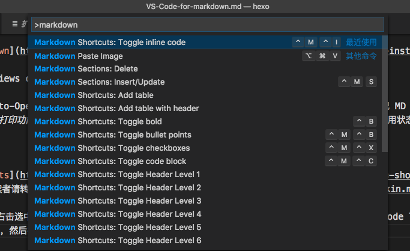
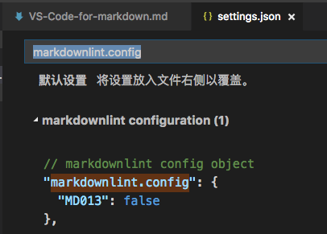

Working with Markdown files in Visual Studio Code is simple, straightforward, and fun. Besides VS Code’s basic editing, there are a number of Markdown specific features that will help you be more productive.
前言
VS Code 原生支持 Markdown 预览，打开一个md文件后，通过快捷键⌘⇧V打开新 tab 页预览，或⌘KV or 点击右上角打开侧边预览按钮来打开侧边预览。
VS Code 支持自定义预览样式和导出 html 文件的功能，因博主没有这方面的需求，这里就不多谈，有需要的读者请看官方文档。
推荐插件
VS Code 插件商城有不少 Markdown 的插件，下面推荐几个博主在用的插件，基本上能满足写作需求。
Markdown Preview
-
Open Markdown preview automatically when opening a Markdown file.
打开 markdown 文档的时候自动开启侧边预览，如果你经常写 MD 文档，又觉得手动开启预览页面很麻烦，那这个插件一定能帮到你。博主用了一段时间，因为一打开 MD 文档，编辑窗口就被拆分成两栏，感觉有点烦，就卸载掉了。这个插件是不是有用，关键还是看个人，博主不用，不代表它就不好或者没用，该推荐的还是要推荐。
-
Instant previews of your markdown files as you type.
功能跟上面的 Auto-Open Markdown Preview 有点像，不过是实时在浏览器上预览 MD 文档。博主偶尔需要把 MD 文档转成 pdf 文档，这个插件就派上用场了_(网页预览的时候使用
⌘+Por⌃+P打印功能可以导出 pdf 文档)_。自动打开网页预览还是有点烦人，因此平时这个插件都是处于禁用状态，有需要的时候才开启。
Shortcurt
Markdown Shortcuts 提供了写 MD 文档的一些快捷键和指令，具体的功能和快捷键这里就不 copy 了，读者请转官方介绍。
使用方法包括快捷键和右击选中文本在弹出的菜单中选择需要的功能文档中都已经讲了，这里不赘述，主要提一下，VS Code 可以通过快捷键 F1 调出命令面板，输入 markdown 过滤 markdown 相关的指令，然后按回车键执行指令。(注：其他功能都可以这样使用，包括git)

从图中可以看到，指令对应的快捷键，不过在 Mac 上使用，有部分快捷键无效，应该是跟博主安装的软件有冲突。
Lint
Markdown linting and style checking for Visual Studio Code
markdownlint 可以帮助检查 MD 文档的语法问题。
| 快捷键 | 说明 |
|---|---|
| ⌘⇧M | 打开问题面板 |
| ⌘. | 光标定位到问题行后使用，弹出提示，点击以打开帮助页面 |
| F8 | 定位下一个问题 |
| ⇧F8 | 定位上一个问题 |
相信有不少人跟博主一样，稍微了解了一些 MD 语法就开始写文档，之后也是没有问题就不再翻看 MD 的语法，在安装这个插件之前，博主也没想到自己的 MD 文档各种不规范，虽然平时用起来没有什么大问题，但是博主认为写规范的文档是个好习惯，也有利于将来尝试新的 MD 工具。
语法规范是必要的，但是有时候我们希望忽略某些规则，这时候可以通过修改配置文件的 markdownlint.config 实现：

More
-
格式化 MD 表格，建议开启自动格式化文档
"editor.formatOnSave": true
Code 上还有换 MD 预览主题的插件，博主没有这个需求，就提一下，有需要的读者自行搜索~
结束
感觉自己需要再去学习一下 MD 的语法~